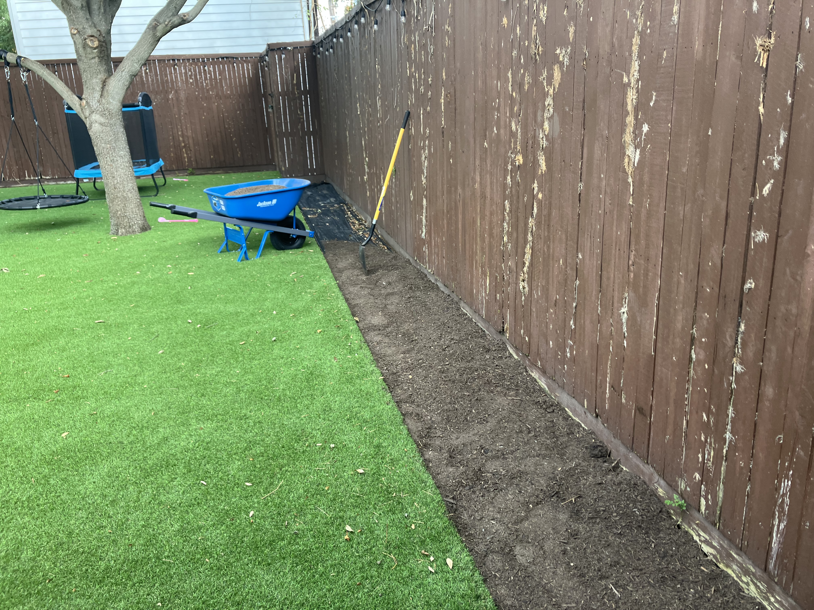
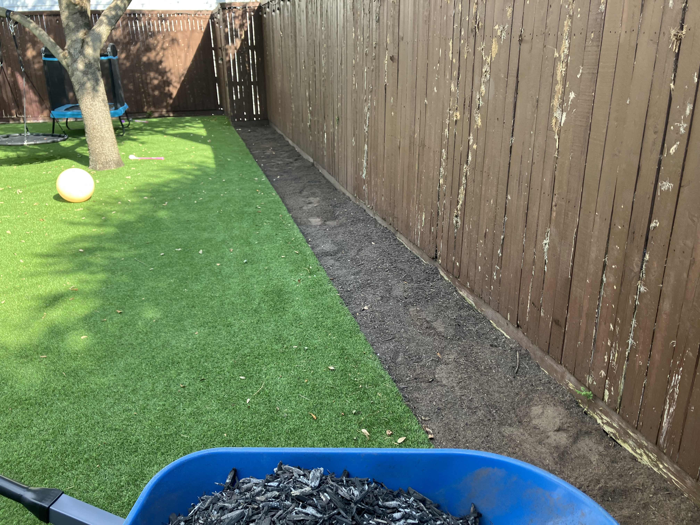
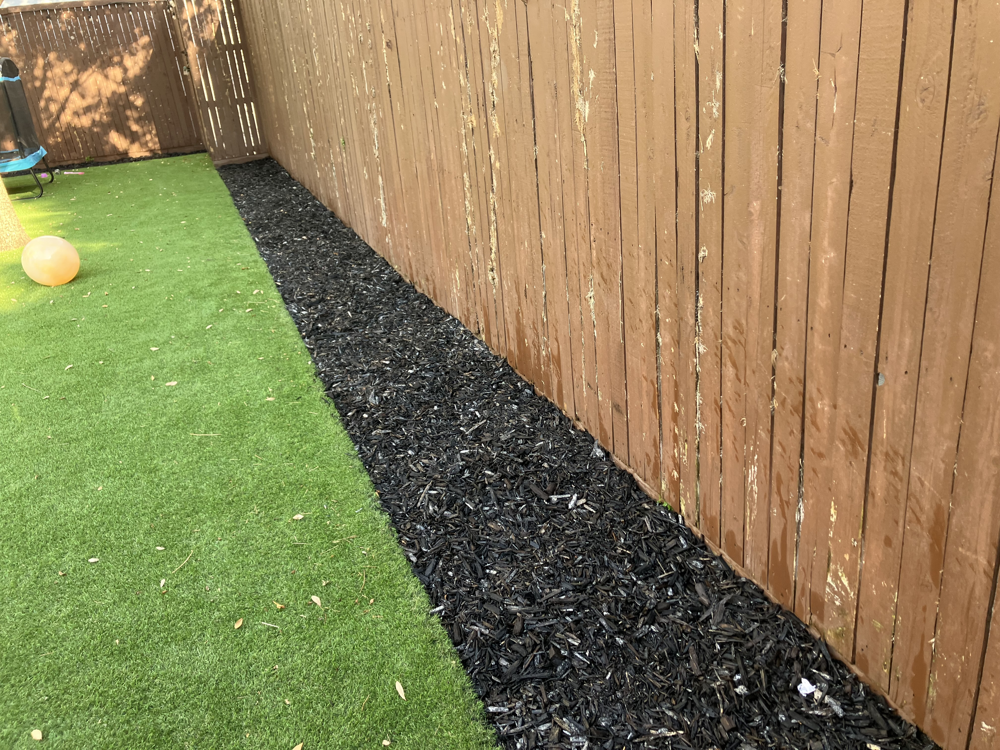

MULCH, GRAVEL & ROCK
From mulch to decorative rock and gravel, we install landscape materials that improve the appearance and functionality of your outdoor space.
Get a Free EstimateWhether you're refreshing an existing landscape bed or creating a completely new one, we can handle the material preparation, installation, and cleanup from start to finish.
We can help you choose a material based on the look you're going for, the area being covered, maintenance needs, and your budget.
We prepare the area before installation by clearing debris, defining the bed, and getting the surface ready for the new material.
We spread and install mulch, gravel, or rock evenly throughout the designated area for a clean and finished appearance.
After installation, we clean up surrounding sidewalks, driveways, patios, and other areas so your property is left looking finished.
We can source and deliver a variety of other mulch, gravel, and rock materials upon request. Contact us to discuss your project.
Get a Free EstimateOur landscaping and material installation projects throughout the Dallas and Lakewoood areas.



Contact us for a free estimate on mulch, gravel, or rock installation.
Get a Free Estimate